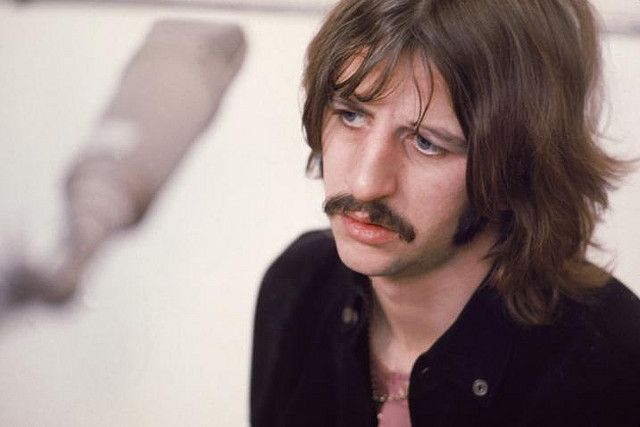

When The Beatles exploded into popularity back in the early 60's one of the things the media liked to do was categorize them in different kinda shallow ways.
and while most of those labels are true to some degree, you could easily apply any of those labels to all the members in some way. One of the most persistent mischaracterizations is the idea that John was the really out there and experimental artits while Paul was only responsible for the sappy love songs. While Paul certainly had an ear for more sweet and lovely sounds he was also responsible for some of the most experimental works the band ever put out. For example the hypnotic tape loops and backwards effects on Tomorrow Never Knows were actually Paul's idea but it often gets credited to John because he's the one who sang it. Another example is the entire concept of their album Sgt. Pepper being Paul's idea, he orchestrated that entire album while John kind of took a backseat during it's production. On the flip side John could be sappy at times too. Just look at songs like Just Like Starting Over or Ask Me Why.

For decades Ringo has been nothing but patronized for his contributions to the band. Whether it be misquoting John as having said that Ringo wasn't even the best drummer in The Beatles (a quote John himself debunked numerous times) or saying that Ringo just sat around until he was told what to play and had no real input within the band. These claims are just silly and seem to stem from the public overemphasizing his lovable goofball persona. But that's not how the other Beatles saw it, in fact they were excited when he started writing his own songs towards the end of the 60's and would enthusiastically offer to help him write. On the business side of things Ringo's vote had just as much power as Paul or John's. The band's ill fated get back project that later became the album Let It Be was originally supposed to be a live televised concert, however the band was having trouble deciding on a venue. Everyting from the coliseum to stone henge was floated as an idea and eventually John, Paul, and George settled on doing it from a cruise ship. The problem was Ringo was not a fan of the idea and completely rejected it. The other members didn't groan or overrule him they immediately said "if Ringo doesn't want to do it, then niether do we" and that was the end of it.
© 2026 Jonathan Combs. All rights reserved.